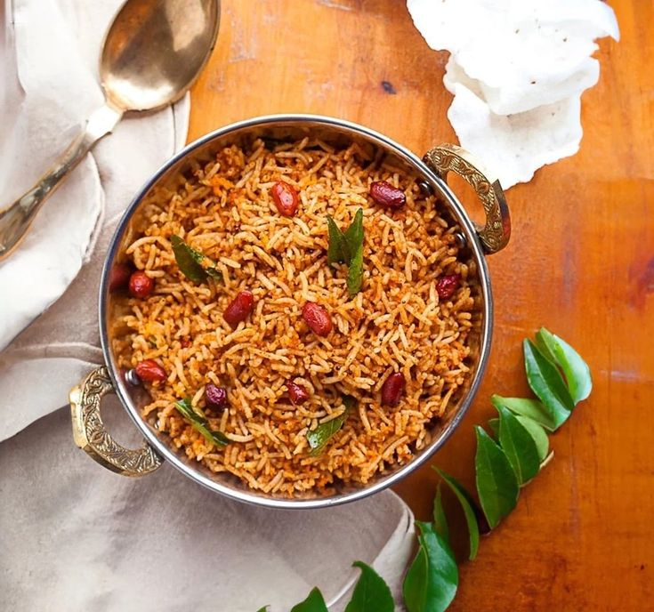

Tamarind Rice (Puliyodarai) Recipe
Tamarind Rice, also known as Puliyodarai or Puliyogare, is a popular South Indian rice dish with tangy, spicy, and slightly sweet flavors. It’s perfect for a quick lunch or a part of a festive meal.
Ingredients:
For the Tamarind Paste:
- 1/4 cup tamarind pulp (or a small lemon-sized ball of tamarind)
- 2 tbsp sesame oil or any cooking oil
- 1/2 tsp turmeric powder
- 2-3 dried red chilies
- 1 tbsp chana dal (split Bengal gram)
- 1 tbsp urad dal (split black gram)
- 1 tsp mustard seeds
- 1/4 tsp fenugreek seeds
- 2 tbsp peanuts
- 10-12 curry leaves
- 1/2 tsp asafoetida (hing)
- 1 tbsp jaggery (or sugar)
- Salt to taste
For the Rice:
- 2 cups cooked rice (cooled)
- 2 tbsp sesame oil
- Salt to taste
Instructions:
1. Prepare the Tamarind Paste:
- Soak the tamarind in warm water for 15-20 minutes if using whole tamarind. Extract the juice by squeezing and straining it. Set the tamarind pulp aside.
- Heat 2 tablespoons of sesame oil in a pan over medium heat.
- Add mustard seeds and let them splutter.
- Add fenugreek seeds, dried red chilies, chana dal, urad dal, and peanuts. Fry until the dals turn golden brown.
- Add curry leaves, asafoetida, and turmeric powder, and sauté for a few seconds.
- Now, pour the tamarind pulp into the pan. Stir and cook the mixture on low heat until it thickens and the raw smell of tamarind disappears (about 10-12 minutes).
- Add jaggery and salt, and cook for another 2-3 minutes. The tamarind paste should become thick and flavorful. Turn off the heat and set it aside.
2. Prepare the Rice:
- Heat 2 tablespoons of sesame oil in a pan and add the cooled cooked rice to it.
- Gently stir the rice to coat it with the oil.
- Add the prepared tamarind paste to the rice, a little at a time, depending on how tangy and spicy you want the rice to be.
- Mix the rice and tamarind paste gently but thoroughly to avoid breaking the rice grains.
- Taste and adjust salt as needed.
3. Serve:
Garnish the tamarind rice with fresh coriander leaves or roasted peanuts if desired. Serve it with papad, coconut chutney, or yogurt.
Note: The tamarind paste can be stored in an airtight container in the refrigerator for up to a week, making it easy to prepare tamarind rice quickly when needed.
Enjoy your tangy and flavorful Tamarind Rice!